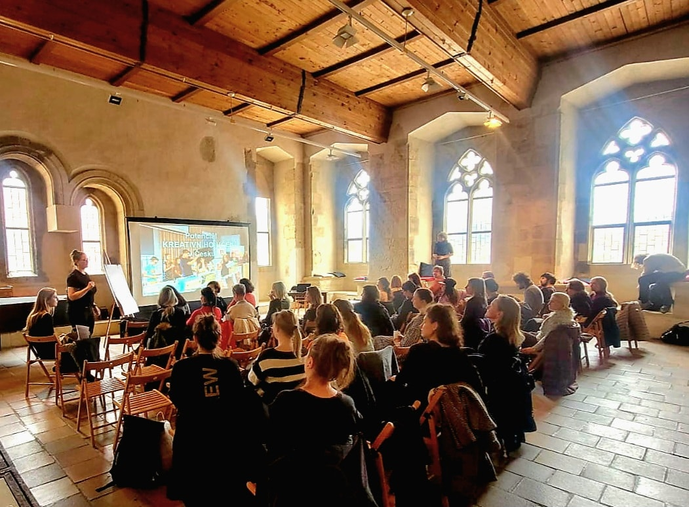
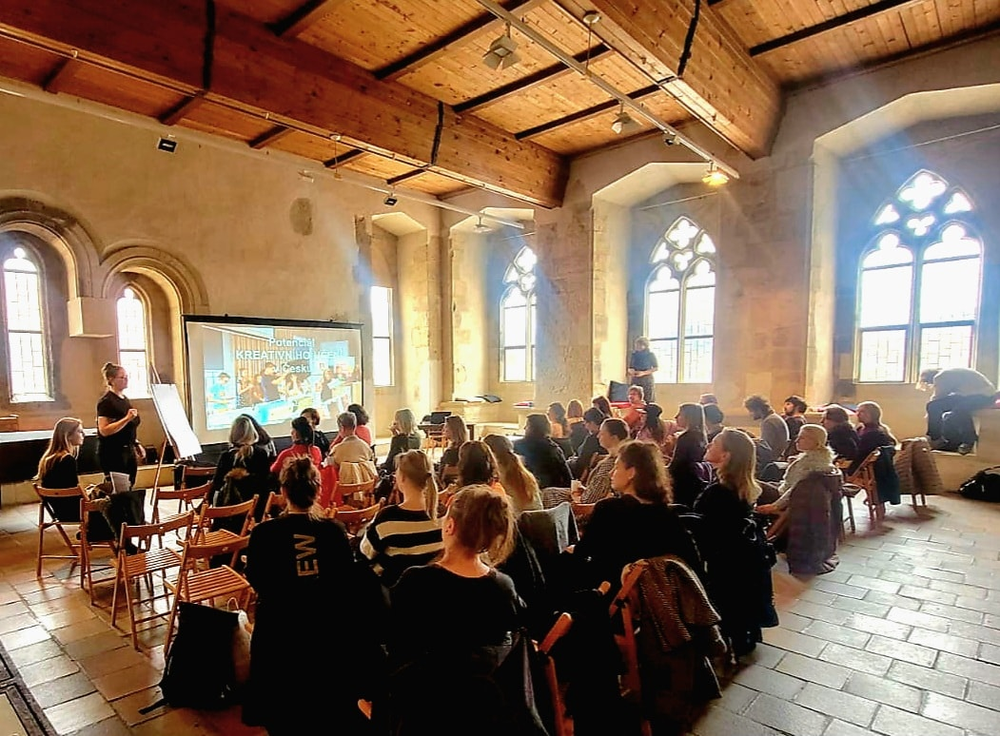

Odborný
seminář
Komory edukačních pracovníků
Rady Galerií ČR
7. 4. 2025
O Semináři
Stručný videopřehled

Odborné příspěvky

Umění jako univerzální jazyk. Integrace cizinců a edukační aktivity GHMP pro návštěvníky z Ukrajiny

OTEVŘENÉ MUO! Vstupte, prosím...

Řečové jednání a práce s živým slovem

Potenciál kreativního učení v ČR

Edukátorky GHMP ve Finsku a Itálii

Edukátorky GMU HK ve Finsku

Online rezervační systém pro školní programy v GVUO

INDIHU Exhibition. Nástroj pro tvorbu virtuálních výstav

Zaváté šlépěje. Jak jsme vytvořili sousoší

ZKUS SVŮJ VKUS ve výstavě Hledá se mistrovské dílo

Od nuly. Založení Ateliéru a Kulturně kreativního centra v Nisa Factory v Jablonci nad Nisou

Host: Místo dětí. Inovativní herní prvky v muzeu a ve městě

Představení výstavy Enter The Room a edukačních aktivit k výstavě
Fotogalerie

 
